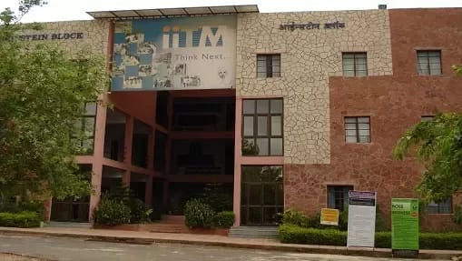

THINK BIG
THINK BEYOND....
Undergraduate
programs
programs
Graduate
programs
programs
Transfer
to GOI
to GOI
Financial
aid
aid
Visit
ITM-GOI
ITM-GOI
EXPLORE MORE+
PROLOGUE
Welcome to ITM-GOI, Gwalior. You can go through all the information regarding University Academics, Admissions, Research and Events here. Located near the picturesque Vindhyachal range, along NH-75, ITM promises a host of courses and activities to continuously develop, evolve and innovate the learning environment of the future Einsteins and Teslas.To develop the institute into a centre of excellence in education, research, training and consultancy to the extent that it becomes a significant player in the technical and overall development of the country.
AWARDED
- ~ Ranked 5th among top 10 Engineering Institution of Central India by Silicon India Survey(June Special Edition 2014).
- ~ Best Placement in Engineering & Management in National Technical Excellence Education Summit &Award (M.P) 2014 by CMAI.
- ~ Best Institute in Industry Interface (Awarded in March, 2013 by CMAI,AICTE and RGPV Bhopal) .

EVENTS
The sports facility designed for the ITM GOI is a feature that would elevate the learning experience on a pedestal scarcely matched by any one in the region & State.
ITM GOI, TAP Cell has timely identified the gap & introduced a unique model of providing Augmentation & Training on required skill sets which can complement the formal education There are various clubs of the students by the students & faculty. Some of the clubs are run by the students to keep in touch & chat on-line for discussions on different issues with their seniors.The sports facility designed for the ITM GOI is a feature that would elevate the learning experience on a pedestal scarcely matched by any one in the region & State.
CONTACT
- "ITM-GOI Campus ,"Opp.Sithouli Raliway Station ,NH-75 Sithouli,Jhansi Road Gwalior(M.P.),INDIA
- Ph- +91-751-2432977,24329389, 23432666
- Fax- +91-751-2432988
- Website- www.itmgoi.in